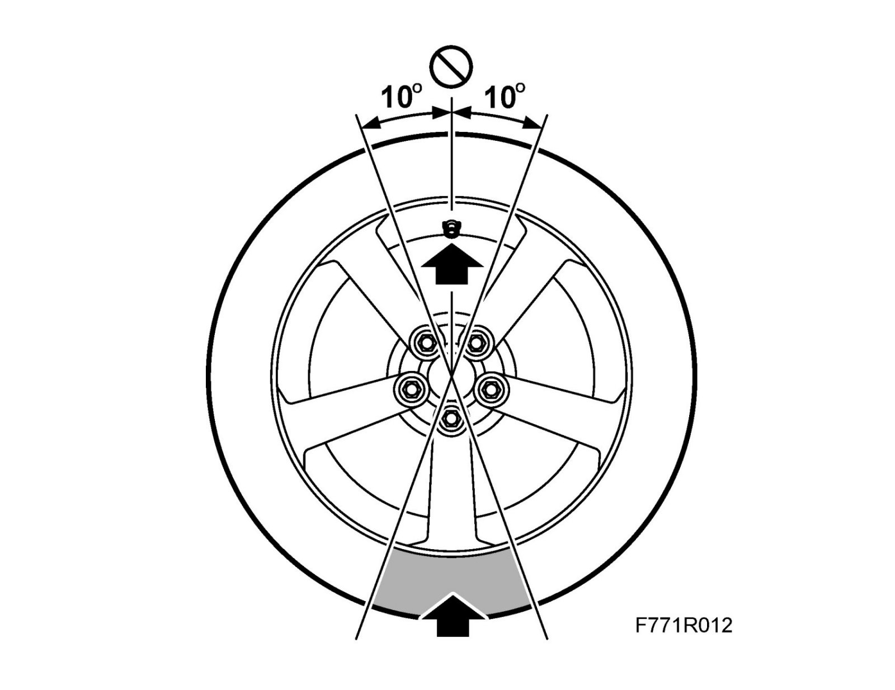
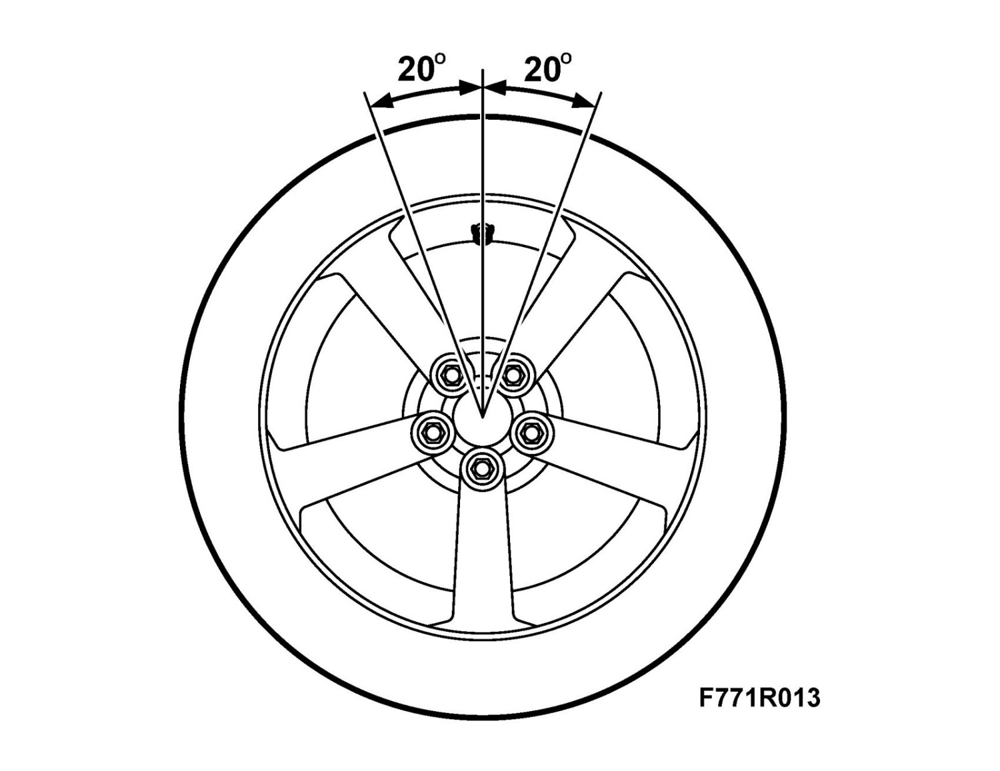

Tires: Service and Repair
Tire with tire pressure sensorTo remove
- Remove the tire using a tire fitting machine.
Note
It is also important to follow the instructions for the tire fitting machine.
- Do not apply the tire tool in an area ±10° from the valve.

- Start to remove opposite the valve.
- Remove the rear side first.
To fit
- Fit the tire using a tire fitting machine.
Note
It is also important to follow the instructions for the tire fitting machine.
- Start to fit around 20° after the valve.

- Finish fitting within an area 20° from the valve.
- Do not inflate the tire to a pressure higher than 7 bar.